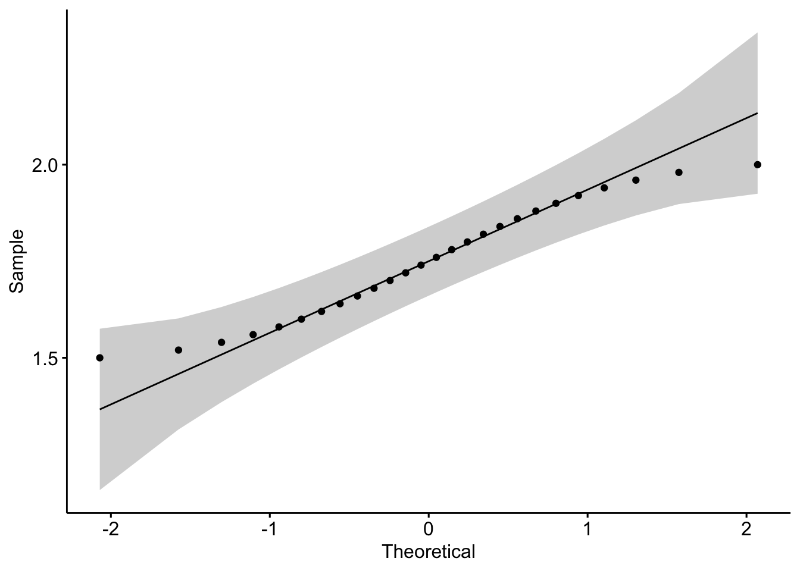

## remove da memória dados anteriores
rm(list = ls())intervalo_de_confianca
knitr::opts_chunk$set(echo = TRUE, collapse = TRUE, error = FALSE, warning = FALSE, message = FALSE, results = 'asis')Intervalo de confiança
Comentamos sobre intervalo de confiança e exploramos temas complementares como Razão de Chances e Risco Relativo nas aulas anteriores.
População
Amostra

Lembrando que teremos sempre uma parte da população para estudar, nossa dita população amostral e usaremos uma parte desta amostra para fazer os testes de hipóteses, ou seja, calcular sobre diferentes médias das amostras irá gerar diferentes resultados e alguns serão muito próximos ao resultado se pudessemos usar toda a população para o cálculo.

Intervalos de confiança são intervalos de valores com chance elevada de conter parâmetros da população.

Estimativa da população com um intervalo de confiança de 95%, em outras palavras significa de forma reducionista que a cada vinte pessoas que nós fossemos medir a altura, somente uma estaria fora do intervalo que nós definimos (nosso parâmetro).
No exemplo acima seriam alturas em pés/polegadas (ft/in) de 5.0 até 6.5, o mesmo que 1,52 até 1,96 metros/centimetros (m/cm).
5.0 = 5 pés e 6 polegadas
1,52 = 1 metro e 52 centímetros
Obs.: Importante lembrar a importância da amostra, se nossa amostra viesse dos jogadores de basquete (NBA ou NBB), certamente estaríamos fora do intervalo esperado.

Exercício com dados de altura fictícios
## definir a média e o desvio padrão da distribuição normal
media_esperada <- 1.73
desvio_padrao <- 0.1
## criar vetor com as alturas de interesse em metros de 2 em 2 cm
alturas_m <- seq(from = 1.50, to = 2.00, by = 0.02)
## converter as alturas para medida americana (pés e polegadas do exemplo da imagem e jogadores da NBA)
alturas_ft <- alturas_m * 3.28084 #valor para converter para pés
alturas_in <- (alturas_ft - floor(alturas_ft)) * 12 #converter para polegadas
alturas_ft <- floor(alturas_ft) # arredondar a medida de pés para inteiro
## calcular a quantidade de pessoas que teriam cada altura usando a função dnorm = já deixa nossa distribuição normal para o exemplo
## multiplicamos por 1000000 para transformar a densidade em uma quantidade aproximada de pessoas por metro em cada intervalo de altura
quantidades_abs <- dnorm(x = alturas_m, mean = media_esperada, sd = desvio_padrao) * 1000000 * 0.02
## criar tabela com as colunas "Altura (m)", "Altura (ft/in)", e "Quantidade (abs)"
tabela <- data.frame(
"altura_m" = alturas_m,
"altura_ft" = paste0(alturas_ft, "'", round(alturas_in), "\""),
"quanti_pes" = round(quantidades_abs)
)
## se quiser salvar tabela em um arquivo CSV
write.csv(x = tabela, file = "distribuicao_alturas.csv", row.names = FALSE)summary(tabela)altura_m altura_ft quanti_pes Min. :1.500 Length:26 Min. : 2084
1st Qu.:1.625 Class :character 1st Qu.:13123
Median :1.750 Mode :character Median :34274
Mean :1.750 Mean :38053
3rd Qu.:1.875 3rd Qu.:62451
Max. :2.000 Max. :79391
library(ggpubr)
ggqqplot(tabela$altura_m)
Se a distribuição é normal esperamos que os pontos façam uma linha reta, a faixa cinza é um limite inferior e superior teórico.
Cálculando Intervalo de confiança 95%
Gerando Dados
## Quantidade de pessoas que estão em nossa população amostral, consideramos que irá representar como se tivessemos medido todos os brasileiros ~208 mi
total_pes <- sum(tabela$quanti_pes)
## média da altura dos brasileiros nesta população amostral
altura_media <- 1.75
## desvio padrão da altura dos brasileiros nesta população amostral
altura_desvio <- sd(tabela$altura_m)
## intervalo de confiança teórico
conf_int_teor <- 0.95
## graus de liberdade
gl <- total_pes - 1Cálculos para exemplo
## Calcular intervalo de confiança para a média por test t
conf_int_t_pes <- t.test(tabela$quanti_pes)$conf.intLimites do intervalo calculados na mão
## confiança dos dados
conf_int <- qt(0.95, df = nrow(tabela) - 1) * (tabela$quanti_pes / sqrt(sum(tabela$quanti_pes)))
## limites
tabela$lim_inf <- round(tabela$quanti_pes - conf_int)
tabela$lim_sup <- round(tabela$quanti_pes + conf_int)
## definir limite inferior do intervalo - sinal negativo
lim_inf_mao <- tabela$quanti_pes - abs(qt(p = (1 - conf_int_teor)/2, df = gl))*altura_desvio/sqrt(total_pes)
## definir limite superior do intervalo + sinal positivo
lim_sup_mao <- tabela$quanti_pes + abs(qt(p = (1 - conf_int_teor)/2, df = gl))*altura_desvio/sqrt(total_pes)Gráfico
library(ggplot2)
## Dados
## Cria o gráfico p de linha com altura no eixo x e quantidade de pessoas no eixo y
p <-
ggplot(tabela, aes(x = altura_m, y = quanti_pes)) +
## Geometria - Adiciona a linha ao gráfico
geom_line(color = "red") +
## Geometria - Adiciona o intervalo de confiança ao gráfico
geom_smooth(
method = "loess",
position = "jitter",
#se = TRUE,
color = "steelblue",
fill = "lightsteelblue"
) +
## Adiciona intervalo de confiança ao gráfico dentro do erro padrão
geom_errorbar(
aes(
ymin = tabela$quanti_pes - 1.96 * sqrt(tabela$quanti_pes),
ymax = tabela$quanti_pes + 1.96 * sqrt(tabela$quanti_pes)
),
width = 0.01,
colour = "purple"
) +
## Formatações - Adiciona título ao eixo x
xlab("Altura (m)") +
## Adiciona título ao eixo y
ylab("Quantidade de pessoas") +
## Adiciona título ao gráfico
ggtitle("Quantidade de pessoas por altura") +
## Define tema do gráfico
theme(
plot.title = element_text(size = 14, face = "bold"),
axis.title = element_text(size = 12),
axis.text = element_text(size = 10),
legend.title = element_blank(),
legend.text = element_text(size = 10)
)
# Salva o gráfico em arquivo
ggsave(
"intervalo_confi_ex.png",
p,
width = 6,
height = 4,
dpi = 300
)
## Imprime o gráfico
print(p)library(plotly)
ggplotly(p)Referência
Material adicional para leitura:
Exemplo real de como calcular a eficácia da vacina do Butantan, com os primeiros dados disponibilizados em janeiro de 2021, com risco relativo: